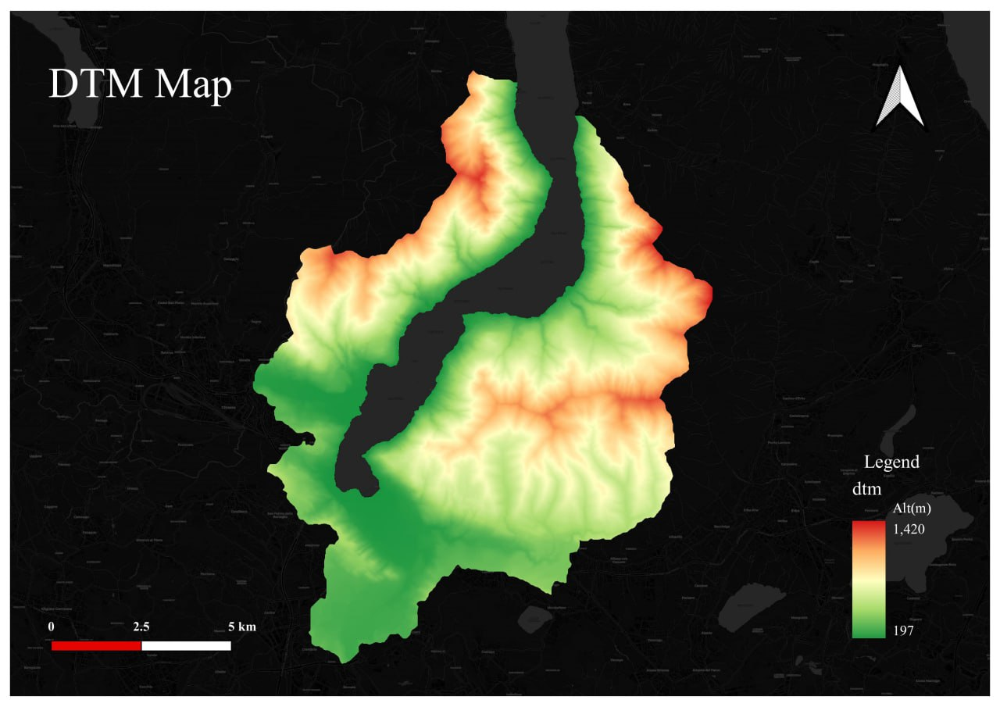

DTM
Digital Terrain Models (DTMs) play a crucial role in landslide susceptibility mapping due to their ability to provide detailed information about the topography and terrain characteristics of an area. Here are some specific ways in which DTMs impact landslide susceptibility mapping:
- Slope calculation: DTMs allow for accurate calculation of slope angles and gradients across a landscape. Steeper slopes are generally more susceptible to landslides, and DTMs provide the necessary data to assess the degree of slope steepness, which is a key factor in landslide susceptibility analysis.
- Aspect determination: DTMs help determine the aspect or compass direction that a slope faces. This information is important as different aspects receive varying amounts of sunlight, affecting factors such as moisture content and vegetation distribution, which in turn influence slope stability and landslide susceptibility.
- Topographic features: DTMs provide detailed information about various topographic features such as ridges, valleys, and concave/convex terrain. These features impact water flow patterns, accumulation of sediments, and the concentration of stress on slopes, all of which are important considerations in landslide susceptibility mapping.
- Drainage analysis: DTMs enable the identification and analysis of drainage patterns, including the location of rivers, streams, and watercourses. Proper drainage is essential for slope stability, and understanding the hydrological characteristics of an area through DTMs helps in assessing the risk of landslides.
- Landslide scar identification: DTMs assist in identifying existing landslide scars or areas that have previously experienced landslides. By overlaying historical landslide data on the DTM, patterns can be analyzed, and areas with a higher likelihood of future landslides can be identified.
- Geotechnical analysis: DTMs can be used to extract information about soil types, rock formations, and geological structures. These factors significantly influence the stability of slopes and contribute to landslide susceptibility. Integrating geotechnical data with DTMs enhances the accuracy of susceptibility mapping.
- 3D visualization: DTMs facilitate the creation of 3D visualizations, which provide a comprehensive view of the terrain. This helps in visualizing and interpreting the relationships between different factors contributing to landslide susceptibility, aiding in better decision-making and risk assessment.
In summary, DTMs provide essential data for analyzing slope characteristics, drainage patterns, topographic features, and geotechnical information, all of which are crucial in assessing landslide susceptibility. The detailed and accurate representation of the terrain through DTMs enhances the effectiveness of landslide susceptibility mapping efforts.